Appendix A. Some basic computations between reference and real elements¶
Volume integral¶
One has
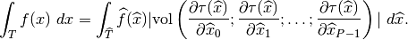
Denoting 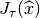 the jacobian
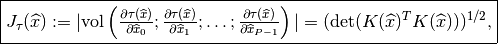
one finally has

When 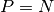, the expression of the jacobian reduces to 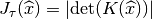.
Surface integral¶
With  a part of the boundary of
a part of the boundary of  a real element and
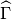 the corresponding boundary on the reference element
a real element and
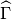 the corresponding boundary on the reference element  ,
one has
,
one has
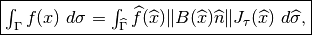
where 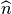 is the unit normal to on . In a same
way
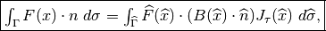
For  the unit normal to on .
the unit normal to on .
Second derivative computation¶
Denoting
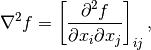
the 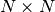 matrix and
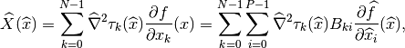
the 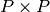 matrix, then
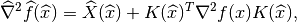
and thus
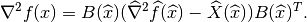
In order to have uniform methods for the computation of elementary matrices, the Hessian is computed as a column vector 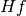 whose components are 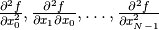. Then, with 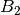 the 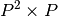 matrix defined as
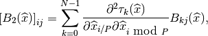
and 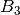 the 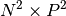 matrix defined as
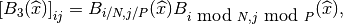
one has
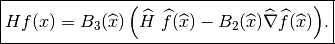
Example of elementary matrix¶
Assume one needs to compute the elementary “matrix”:
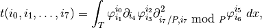
The computations to be made on the reference elements are
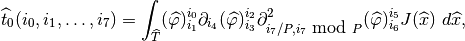
and
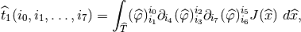
Those two tensor can be computed once on the whole reference element if the geometric transformation is linear (because 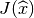 is constant). If the geometric transformation is non-linear, what has to be stored is the value on each integration point. To compute the integral on the real element a certain number of reductions have to be made:
- Concerning the first term (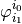) nothing.
- Concerning the second term (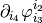) a reduction with respect to 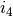 with the matrix 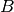.
- Concerning the third term (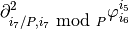)` a reduction of
 with respect to 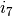
with the matrix and a reduction of 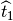 with respect also
to with the matrix 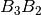
with respect to 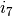
with the matrix and a reduction of 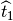 with respect also
to with the matrix 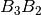
The reductions are to be made on each integration point if the geometric transformation is non-linear. Once those reductions are done, an addition of all the tensor resulting of those reductions is made (with a factor equal to the load of each integration point if the geometric transformation is non-linear).
If the finite element is non--equivalent, a supplementary reduction of the
resulting tensor with the matrix  has to be made.
has to be made.

目次
前のトピックへ
Interface with scripts languages (Python, Scilab and Matlab)
次のトピックへ
Download
Main documentations
- GetFEM++ User documentation
- Python Interface
- Matlab Interface
- Scilab Interface
- Gmm++
- GetFEM++ project